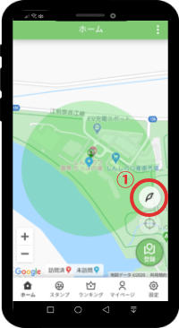
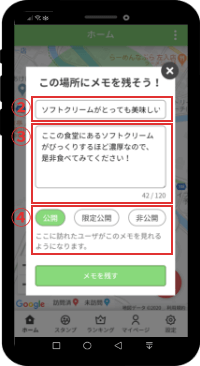
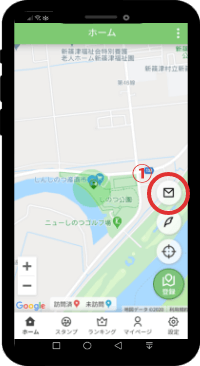
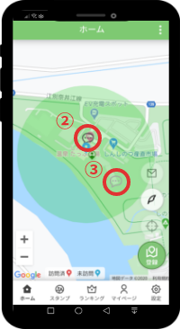
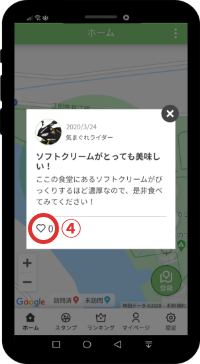
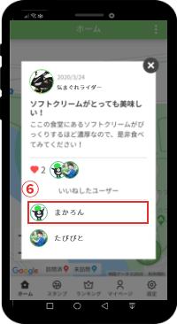
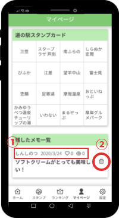

機能概要
ローカルメモ機能とは、道の駅訪問者が残せるメモ機能です。そのときの思い出や、そこで知りえた情報など、さまざまな感想をその場所に残すことで、他の訪問者と情報交換ができる機能です。
メモは公開、非公開の選択が可能なため、自分だけの思い出メモとして活用することもできます。
使い方
メモの記録方法
-

道の駅に着いたら、画像の赤枠①番の「メモを記録するボタン」をタップしてください。
※道の駅の登録有効範囲でのみメモが可能です。 -

訪れたときの思い出や、ここで知り得た情報を書き込みます。画面の説明は以下のとおりです。
②：記事のタイトル
③：記事の本文
④：記事を公開するかどうか
※非公開の場合はマップに表示されません。
※記事はあとから削除することができますが、一度書いた文章をあとから修正することはできません。
メモの閲覧方法
-

道の駅に着いたら、画像の赤枠①番にある「メモを表示する」ボタンをタップしてください。
※道の駅にメモが存在しない場合は①のボタンは表示されません。 -

②番の吹き出しアイコンをタップしてください。
既読のメモは③のように薄い色で表示されます。 -

過去のユーザが残したメモが表示されます。
④番のハートマークをタップするとメモに対して「いいね」をつけることができます。⑤番のいいねしたユーザをタップすると、いいねしたユーザの一覧が表示されます。
-

ユーザ一覧から、ユーザ名(⑥番)をタップすることで各ユーザの詳細を見ることができます。
自分が残したメモの確認および削除方法
-

マイページから自分が残したメモを見ることができます。①番は左から順に、メモを残した道の駅、記録した日付、いいねされた数、閲覧された数を表しています。
※非公開メモの場合はいいねアイコンと既読アイコンが表示されません。②の削除アイコンをタップすると、確認ウィンドウが表示され、OKをタップするとメモを削除することができます。
メモをタップすると、メモの詳細が確認できます。